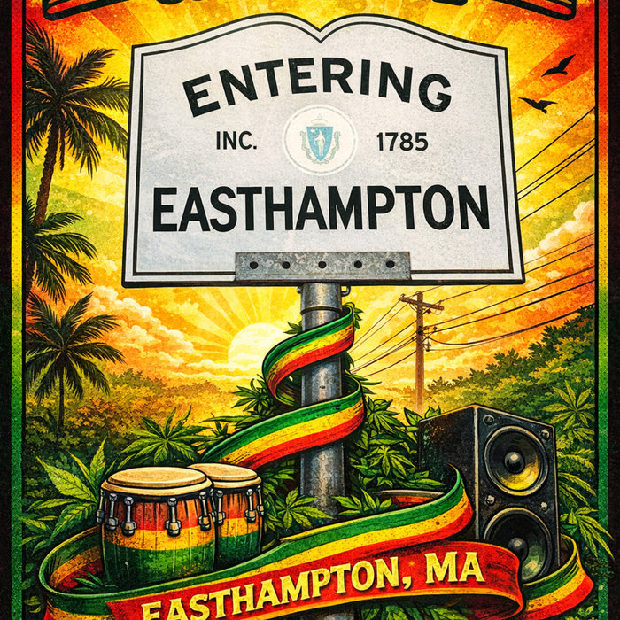

Jan 9, 2026
Heavy Culture Cooperative
A thank-you to an old Easthampton hall brought back to life
Heavy Culture Cooperative isn't a concept venue or a brand experiment. It's an old hall on Northampton Street, dating to 1865, brought back to life by working musicians, volunteers and believers who wanted a real room for real sound.
It took two years of searching town to town and another year of breaking ground. It's member owned, with no velvet rope and no bought-in name.
Why I wrote the song
This song came out of deep respect for Easthampton and for spaces built the hard way, by neighbors who refuse to let live music disappear. Places like this keep the chain unbroken between past, present and future.
It's a thank-you to the hands that built it, the people who show up, and the town that still makes room for music.
To listen, you need to be a patron. Click here to sign up.
Want a song like this for your town, group or family? Here's how commissions work.
My whole catalog is for patrons. Become a patron.